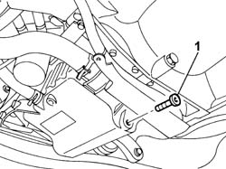
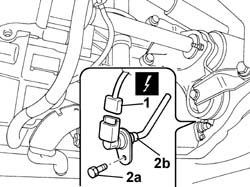
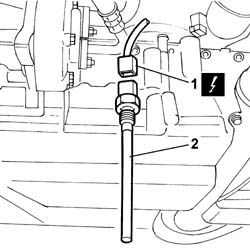

1084A40 ENGINE OIL LEVEL SENSOR - R + R
- Path
- Procedures > 10 ENGINE > 1084 ENGINE LUBRICATION > 1084A INDICATORS/CHECK DEVICES > 1084A40 ENGINE OIL LEVEL SENSOR - R + R
- Kind
- repair procedure (removal / refitting; the operation number is the code)
- Applies to
- engines: 2.0 16v, 2.2 16V JTD; all production periods
- Interactive page
- https://sloeber94.github.io/elrnDB-fUlss/en/#/179007155
Applies to: engines: 2.0 16v; all production periods
 Removing
Removing
 Refitting
Refitting- Disconnect the negative battery terminal.
- Position a suitable container for collecting the engine oil.
- Undo the engine oil drain plug and remove it.

Applies to: engines: 2.0 16v; all production periods
- Disconnect the electrical connection for the engine oil level sensor.
- Undo the fixing bolt (2a) and remove the engine oil level sensor (2b).

Applies to: engines: 2.0 16v; all production periods
Refitting
Removing- Position the engine oil level sensor in its housing.
- Tighten the bolt fixing the engine oil level sensor.
- Connect the electrical connection disconnected previously.
- Replace the gasket with another of the same size and equal profile.
- Fit the drain plug into the threaded seat on the sump and tighten to torque.
- Connect the negative battery terminal.
Applies to: engines: 2.2 16V JTD; all production periods
Removing
RefittingOp. 7055B54 UNDER ENGINE PROTECTION/GUARD - R.R.
- Disconnect the electrical connection.
- Undo and remove the engine oil level sensor.

Applies to: engines: 2.2 16V JTD; all production periods
Refitting
Removing- Fit the tensioner and tighten the fixing bolt to torque.